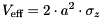
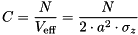
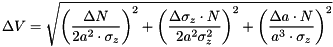

This function implements a 1-component pure-diffusion model for data acquired with a camera in SPIM illumination mode. The model was taken from:
Wohland T, Shi X, Sankaran J, Stelzer EH (2010): Single plane illumination fluorescence correlation spectroscopy (SPIM-FCS) probes inhomogeneous three-dimensional environments, Optics Express 18(10): 10627-10641, doi: 10.1364/OE.18.010627.The fit function is defined as: $$bmath:g(\tau)=G_\infty+\frac{(I-B)^2}{I^2}\cdot\frac{1}{N}\cdot\frac{1}{4a^2\cdot\sqrt{\pi}}\cdot\sum_{i=1}^3\rho_i\cdot\left[a\cdot\sqrt{\pi}\cdot\mbox{erf}\left(\frac{a}{2\cdot\sqrt{D_i\tau+w_{xy}^2}}\right)+\frac{4\cdot\sqrt{D_i\tau+w_{xy}^2}}{\sqrt{\pi}}\cdot\left[\exp\left(-\frac{a^2}{4\cdot(D_i\tau+w_{xy}^2)}\right)-1\right]\right]^2\cdot\left[1+\frac{D_i\tau}{w_z^2}\right]^{-1/2}$$ The parameters are:
$$jankrieger_phdthesis$$
For the fractions we have in addition:
var. Parameter G∞ constant offset N particle number in the observation volume Di i-th diffusion coefficient ρi fraction of i-th diffusing component a width of a (square) pixel in the image plane (i.e. pixel size of camera divided by the magnification) wxy lateral radius of the point-spread function (PSF), 1/e2-radius wz longitudinal radius of the point-spread function (PSF), 1/e2-radius $$math:I$$ average measured intensity in focus during measurement $$math:B$$ average background intenisty in focus during measurement
ρ1 = 1 - ρ2 - ρ3
Δρ1 = √(Δρ22 + Δρ32)
The focal volume is calculated as:
and the concentration therefore is:

